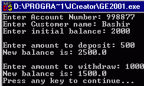
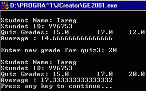

So far, all the classes we have been written
are applications containing the main method.
Another type of class is that which is written not
necessarily to be executed as an application, but to be used in
creating objects. Such type of classes
are designed such that they describe the state and methods for a set of
objects. This is achieved by using
instant variables, instant methods and constructors.
Instant Variables: These
are variables declared without using the static keyword.
Such variables are only accessed through an object of the class and each
object has its own copy of the variables – hence the name instant. Instant variables are used to store the state
of an object and are usually declared as private so that they cannot be accessed directly by
other objects.
Instant methods: These are methods declared without using the static keyword. They are normally used to describe the
behavior of objects of a particular class.
Instant methods are normally declared as public so that they could be
accessed by other objects.
Constructor: These are used to
initialize the fields (variables) of an object at the time the object is being
created. Constructors must have the
same name as the class, they have no return type and they are implicitly
public.
Example 1: The
following shows two classes. A class,
Box, which specify the fields, a constructor and methods of a box object, and a
class, BoxDemo, which creates two Box objects and called their methods.
|
public
class Box { private double length , width , height; //instance variables public Box(double boxLength , double
boxWidth , double boxHeight) { //constructor length = boxLength; width = boxWidth; height = boxHeight; } public double volume() { //instant methods return length * width * height; } public double surfaceArea() { return 2*(length*width + length*height +
width*height); } } |
|
public
class BoxDemo { public static void main(String[] args) { // Create two Box objects Box box1 = new Box(20.0, 10.0, 15.0); Box box2 = new Box(6.0, 4.0, 2.0); double volume, area; // Get and display volume and surface
area of box1 volume = box1.volume(); area = box1.surfaceArea(); System.out.println("The volume of
box1 is " + volume + " cubic cm"); System.out.println("The surface
area of box1 is "+area+" square cm\n"); // Get and display volume of surface
area box2 System.out.println("The volume of
box2 is " + box2.volume() + " cubic cm"); System.out.println("The surface
area of box2 is "+area+" square cm\n"); } } |
If a variable is declared as static then there will be only one
copy of the variable, which can be access though the class name, even without
creating any object of the class. Thus,
such variables are sometimes called class variables. Such a variable cannot be used to store the state of an object
since each object has its own state.
Example 2: The following
example shows the difference between static and non-static variables. Notice that both the class Circle and the
class CircleDemo are stored in the same file.
In this case, only one of the classes should be declared as public – the
one containing the main method. The file
should also have the same name as this public class.
|
//
Demonstrating the use of static variables. class
Circle { private static
int numberOfCircles = 0; //a static
variable private double radius; //instance
variables public Circle(double circleRadius) { numberOfCircles++; radius = circleRadius; } public double area() { return Math.PI * radius * radius; } public double circumference() { return 2.0 * Math.PI * radius; } public static int getNumberOfCircles() { return numberOfCircles; } } public
class CircleDemo { public static void main(String[] args) { // The static method getNumberOfCircles
can be called before creating any circle object System.out.println("The number of
circles is " + Circle.getNumberOfCircles()); Circle circle1 = new Circle(8.5); System.out.println("The number of
circles is " + Circle.getNumberOfCircles()); Circle circle2 = new Circle(5.0); System.out.println("The number of
circles is " + Circle.getNumberOfCircles()); System.out.println("The area of the
first circle is \t" + circle1.area() + " square cm"); System.out.println("The
circumference of the first circle is\t" + circle1.circumference() +
" cm"); System.out.println("The area of the
second circle is\t" + circle2.area() + " square cm"); System.out.println("The
circumference of the second circle is\t" + circle2.circumference() +
" cm\n\n"); } } |
It
is a good programming principle to always declare instance variables as private. However, it is O.K. to allow indirect access
to these variables by providing public methods. Some of these method only access but do not change the variables,
hence they are called accesor methods. Those
that do not only access, but also make changes to these variables are called mutator
methods.
Example
3: The follows shows example of accessor
and mutator methods.
|
//
Demonstrating using accessor and mutator methods. class
Rectangle { private double length , width; public Rectangle(double rectangleLength ,
double rectangleWidth) { length = rectangleLength; width = rectangleWidth; } public double area() { return length * width; } // Accessor methods public double getLength() { return length; } public double getWidth() { return width; } // Mutator methods
public void setLength(double newLength) { length = newLength; } public void setRectangleWidth(float
newWidth) { width = newWidth; } } public
class RectangleDemo { public static void main(String[] args) { // Create one Rectangle object Rectangle rectangle = new
Rectangle(20.0, 10.0); // Get and display the area of rectangle double area = rectangle.area(); System.out.println("The area of the
rectangle is\t" + area + " square cm"); // Get and display the length of
rectangle //Note: we cannot use rectangle.length System.out.println("The length of
the rectangle is\t" + rectangle.getLength() + " cm"); // Modify the length of rectangle1 to
12.0 //We must use a mutator method to change
the value of a private instance variable rectangle.setLength(12.0); // Get and display the new length of the
rectangle System.out.println("The new length
of the rectangle is " + rectangle.getLength() + " cm"); // Get and display the new area of the
rectangle System.out.println("The new area of
the rectangle is " +
rectangle.area() + " square cm\n\n"); } } |
1. Open the folder lab04 , Study, compile, and then execute each of the three demo applications:
· BoxDemo
· CircleDemo
· RectangleDemo
2. Write a java program containing two classes: BankAccount and BankAccountDemo. The class BankAccount must contain the following:
·
an
instance variable accountNumber of type int.
·
an
instance variable customerName of type String
·
an
instance variable balance of type double.
· a constructor that initializes each of the instance variables.
· a method deposit.
· a method withdraw
· a method getBalance.
The class BankAccountDemo
must:
|
·
Prompt for and read the account number for the customer. ·
Prompt for and read the name of the customer. ·
Prompt for and read the initial balance for the customer. · Create a bankAccount object for the customer. · Prompt for and read an amount to be deposited. · Display the current balance for the customer after the deposit. · Prompt for and read an amount to be withdrawn. · Display the current balance of the customer after the withdrawal. |
 |
3. Write two java classes, Student and StudentDemo in separate files. The class Student should contain the following:
·
an
instance variable name of type String.
·
an
instance variable iDNumber of type int
·
three
instance variables quiz1, quiz2, quiz3 of type double.
· a constructor that initializes each of the instance variables.
· a get method for each of the instance variables.
· three set method, one for each of quiz1, quiz2 and quiz3
· a method average to return the average of the three quizzes.
· a method printDetails to print the details of a student object in the following format:
Student Name: ??????????
Student ID: ???????????
Quiz Grades: ??????? ????????? ????????
The class StudentDemo must:
|
·
Create an object of type Student, supplying values for name, ID
number and three quizzes in the constructor call. ·
calls the printDetails method to print the details of the student ·
calls the average method to
get the average and print it. ·
Prompts for and read the new grade for quiz3 ·
calls the setQuiz3() method to change the value of quiz3 to the value
entered by the user. ·
prints the details and the average again. |
 |